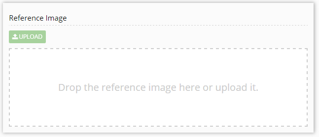

Uploading a reference image
When creating a brick, you can upload a reference image. This lets the writer start working even if they can't access the windows to be documented. It is also a useful reference to see if the interface changed since the user help was first created.
To upload a reference image to a UI help brick, go to the Parameters tab. A Reference Image section is available.

There are three options to upload a reference image:
- Click Upload.
- Double-click in the upload field.
- Drag and drop the image directly into the upload field.